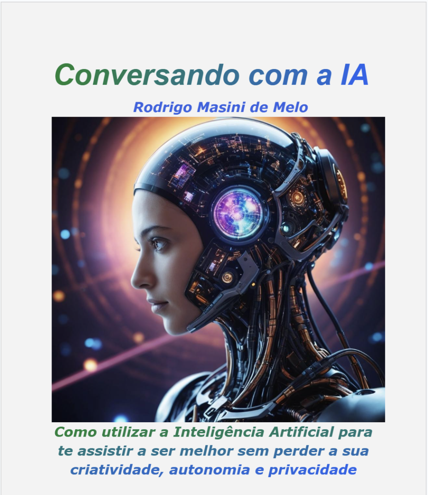

Conversando com a IA
A nova e mais completa referência sobre interação com a Inteligência Artificial já disponível no Brasil.
"Este livro desmistifica a Inteligência Artificial e capacita o leitor a utilizar ferramentas como o ChatGPT de forma eficaz. Aprenda a conversar com a IA utilizando a Técnica de Prompt de Insinuações (TPI), o que aumenta em 80% a qualidade final das respostas."

Agente Virtual
Extraio o principais benefícios do Livro
"Da construção de interações eficazes com a TPI aos dilemas éticos da IA, este livro oferece um guia prático de como navegar no mundo da IA. A obra incentiva a alfabetização em IA, ensina a co-criação de soluções inovadoras e como o leitor se protege dos riscos da tecnologia, garantindo um futuro onde a IA é usada para o bem comum."

Assistente Virtual
Identifico porque esse Livro é único
"O mais interessante neste Livro é como ele mostra não apenas como usar a IA, mas a realmente conversar com ela, tornando-a uma co-criadora. Através da TPI (técnica criada pelo autor) e da ênfase na alfabetização em IA, o livro oferece as ferramentas para dominar essa tecnologia transformadora, explorando seu potencial criativo e inovador, enquanto nos alerta para seus perigos e dilemas éticos. Ele prepara o leitor para um futuro onde a IA não é apenas uma ferramenta, mas uma parceira na construção de um mundo melhor."

Agente Virtual
Descrevo o que é mais interessante sobre o Livro

Lançamento